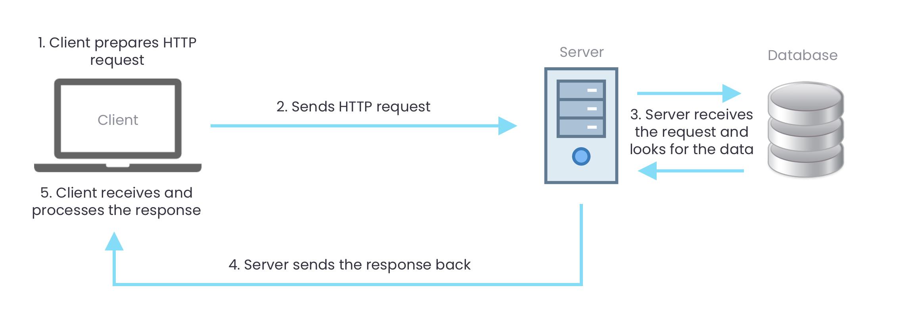

AJAX - Introduction
AJAX stands for Asynchronous JavaScript And XML. AJAX uses the XMLHttpRequest object to make HTTP requests to send and receive data from external sources.
All that happens in the background and after the page is loaded, this adds a lot of interactivity to the web page without having the reload it which is great for user experience.
The image below shows how AJAX works.
Let's imagine a search box to understand how can use AJAX to make the search without reloading the page.
- An event occurs in the client (the user types something in the search box)
- The browser sends an HTTP request to the server with the search term
- The server looks for data that matches that search term in the database.
- The server send the results back to the client. (Normally in JSON)
- The answer is received and parsed to become a Javascript object.
- The page content is changed to show the search results.
Now that we know how AJAX works, we're ready to make our first request.